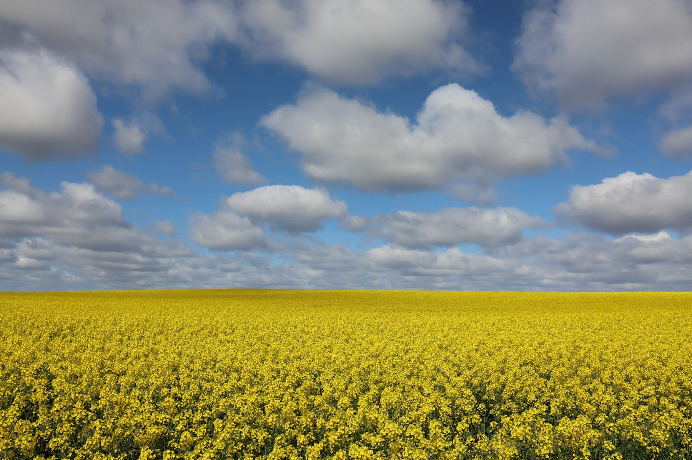
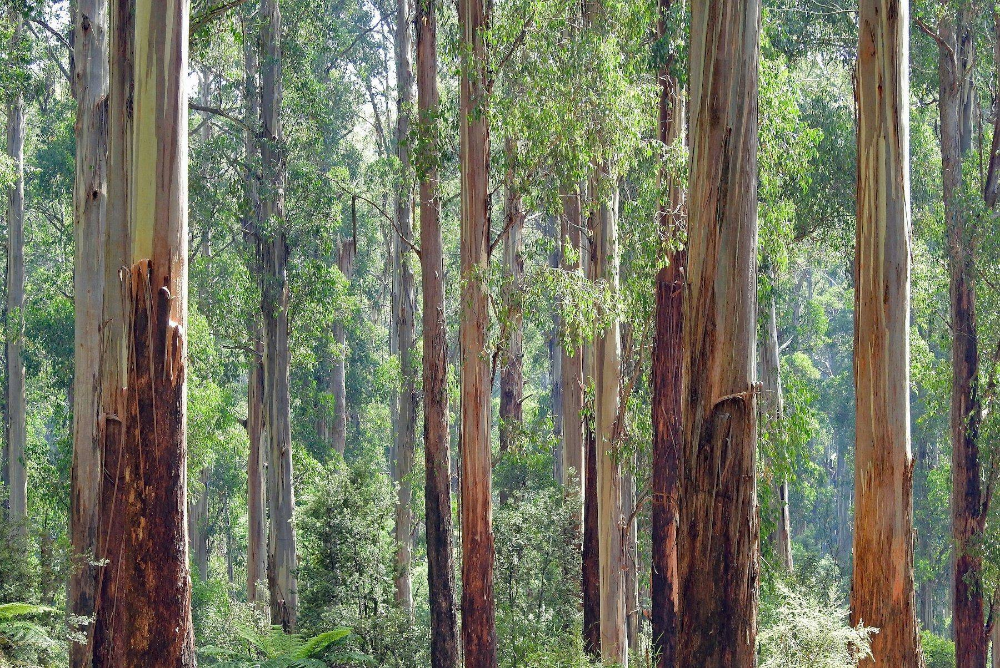

The company
Named for care. Based in Sydney.
Kylin Trading Pty Ltd is an Australian B2B company, registered in 2024, focused on health supplements and wellness ingredients. We connect Australian agricultural origin with distributors, retailers, and brands — a China–Australia trade bridge, documented at each step.


The name
Kylin is the English rendering of qilin — a traditional emblem of good fortune and care. We do not trade on mysticism. The name is a reminder to handle health products with respect: sourced carefully, documented clearly, delivered as agreed.
Australian origin
Australia is an agricultural origin, not only a shipping flag. We source in categories buyers already know: tea tree, eucalyptus, macadamia, active honey, and native fruits such as Kakadu plum (Gubinge). These plants have long been known to Aboriginal and Torres Strait Islander peoples; we trade them as documented agricultural goods, without claiming a community partnership we do not have.
How we work
Cross-border supply with a relationship at the centre. Organic and traceable lots where the files support the claim. We prefer fewer, longer partnerships over transactional bursts. Conversations start with what you need to sell — category, format, documentation — not with a shopping cart.
Where we are
Sydney, NSW 2118, Australia. KYLIN TRADING PTY LTD, ABN 71 674 493 219, ACN 674 493 219. A street address and named contacts will be published here once confirmed. Until then, please use the wholesale enquiry form.
Founding year follows the company’s ABN active-from date (29 January 2024). A street address, live email, and leadership names will be added by the owner — they are not invented here.
Care in what we source. Care in how we trade.
Kylin Trading